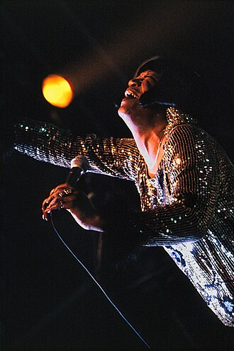

Trudy Lynn
Trudy Lynn is an American electric blues and soul blues singer and songwriter, whose recorded work has been released on twelve studio albums, one live album, and four compilation albums.
Complete Discography & Tracklists (8)
2002 Trudy's Blues - Live (Blues Power) 🎵 9 Tracks
2014 Royal Oak Blues Café 🎵 11 Tracks
2016 I'll Sing the Blues for You 🎵 10 Tracks
2018 Blues Keep Knockin' 🎵 10 Tracks
2019 Connor Ray Christmas 🎵 5 Tracks
2022 Golden Girl 🎵 11 Tracks
2026 Turning the Same Ole Corners 🎵 0 Tracks
No tracks registered.